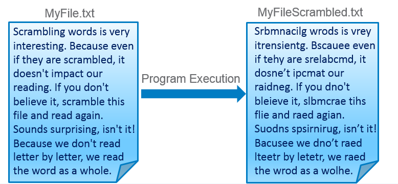
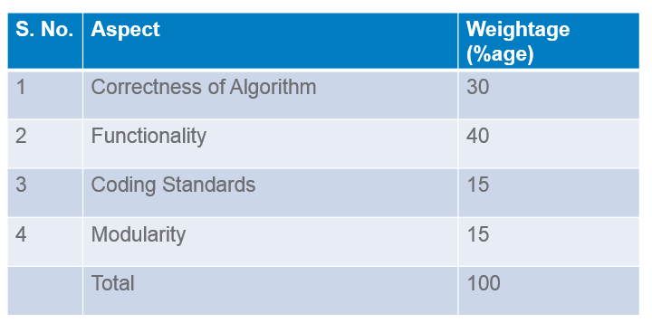

This project is to be done after completing Module 1
Learners are suggested to use Eclipse with PyDev plug-in for development
Suggested duration: 4 person-hours
Suggested team size: 1
After completing this project, a learner should be able to understand and implement the following fundamental concepts of Python Programming in solving a real world problem.
Variables
Data Structures
String Lists
Control Structures
If / else statements, For loop
Functions
File Handling and Operations
Try to read the following:
"Srbmnacilg wrods is vrey itrensientg. Bscauee even if tehy are srelabcmd, it dosn'et ipcmat our raidneg. Bacusee we dn'ot raed lteetr by letetr, we raed the wrod as a wolhe."
The project is to write a Python program that reads a text file, scrambles the words in the file on following rules and writes the output to a new text file:
Words less than or equal to 3 characters need not be scrambled
Don't scramble first and last char, so Scrambling can become Srbmnacilg or Srbmnailcg or Snmbracilg , i.e. letters except first and last can be scrambled in any order
Punctuation at the end of the word to be maintained as is i.e. "Surprising," could become "Spsirnirug," but not "Spsirn,irug"
Following punctuation marks are to be supported - Comma Question mark, Full stop, Semicolon, Exclamation
Do this for a file and maintain sequences of lines
Hint: use random module of Python for scrambling
On executing the program, it should prompt the user to enter input file name and generate an output file with scrambled text.
Output file should be named by appending the word “Scrambled” to input file name.


The project provides a practice on following concepts to learners: